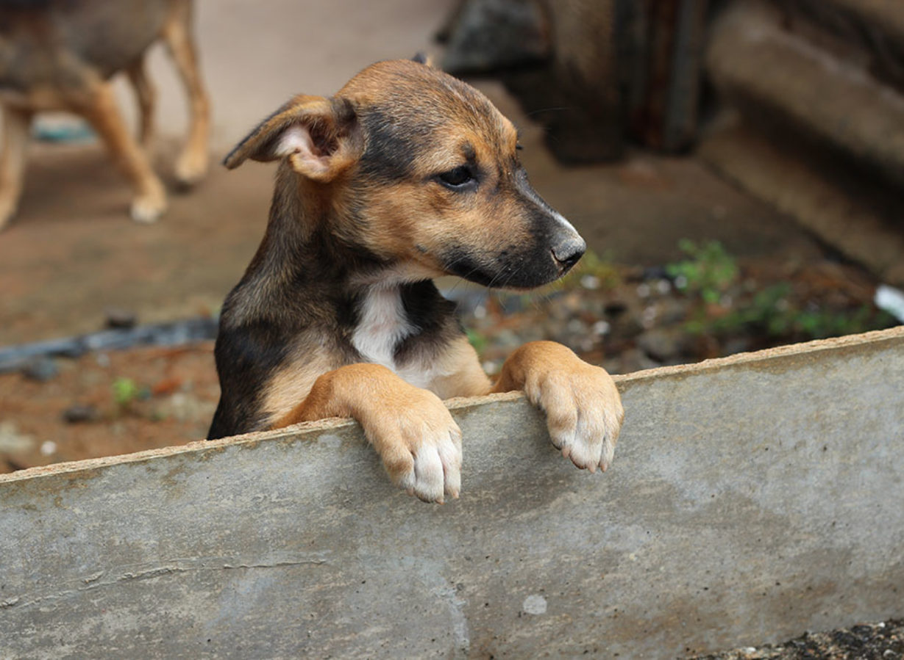

Adopting a stray dog or cat is a great way to provide a loving home for an animal that may have had a difficult past. These animals can make incredibly loyal and loving pets, despite their rough start in life. By adopting a stray, you not only give them a second chance at a happy life, but also free up resources at local shelters to help more animals in need. So, consider adopting a stray and make a difference in their life today.

ADOPT ME
ADOPT ME